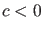
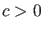
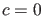
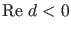
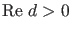
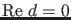

Next: Limitcycle initialization Up: Bifurcations of limit cycles Previous: Branch Point Locator Contents
The periodic normal form at the Limit Point of Cycles (LPC) bifurcation is
The periodic normal form at the Period Doubling (PD) bifurcation is
If  then the PD bifurcation is supercritical, i.e., within the center manifold on one side of the bifurcation only stable cycles exist and on the other side unstable cycles coexist with stable period-doubled cycles. If  the PD bifurcation is subcritical, i.e., within the center manifold on one side of the bifurcation stable cycles coexist with unstable period-doubled cycles and on the other side only unstable cycles exist. (for  the PD degenerates to Generalized Period Doubling bifurcation (GPD) but this will not be detected on a branch of limit cycles since this is a codimension 2 phenomenon).
The periodic normal form at the Neimark-Sacker (NS) bifurcation is
If  then the bifurcation is supercritical, i.e. in the center manifold the limit cycle is stable on one side of the bifurcation point and unstable on the other side and the unstable cycles coexist with stable invariant tori. If  then the bifurcation is subcritical, i.e. in the center manifold the limit cycle is stable on one side of the bifurcation point and unstable on the other side and the stable cycles coexist with unstable invariant tori. (for  the NS bifurcation degenerates to a Chenciner bifurcation (CH) but this will not be detected on a branch of limit cycles since it is a codimension 2 phenomenon).